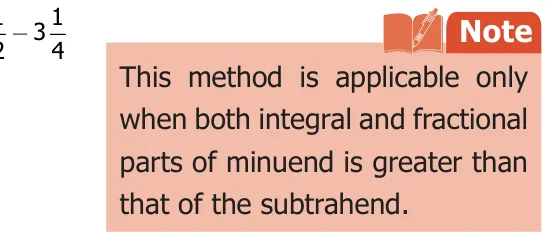
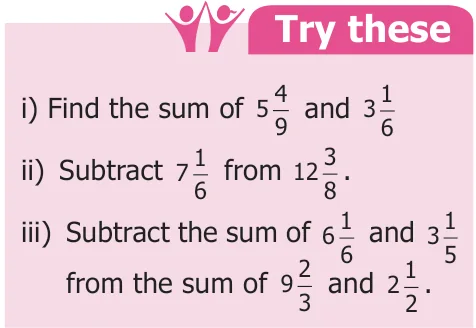

<!DOCTYPE html>
<html lang="en">
<head>
<meta charset="UTF-8">
<meta name="viewport" content="width=device-width,initial-scale=1">
<title>1.5 Addition and Subtraction of Mixed Fractions — Fractions</title>
<meta name="description" content="Class 6 Mathematics · Term 3 · Fractions · 1.5 Addition and Subtraction of Mixed Fractions">
<link rel="icon" href="data:image/svg+xml,<svg xmlns='http://www.w3.org/2000/svg' viewBox='0 0 100 100'><text y='.9em' font-size='90'>📘</text></svg>">
<link rel="stylesheet" href="../../../assets/book.css">
<link rel="stylesheet" href="https://cdn.jsdelivr.net/npm/katex@0.16.11/dist/katex.min.css" crossorigin="anonymous">
</head>
<body>
<header class="topbar">
<div class="topbar-in">
  <div class="crumb">
    <span class="c1"><a href="../../../index.html">Library</a> · <a href="../../index.html">Class 6 Mathematics · Term 3</a></span>
    <span class="c2">Fractions · 1.5 Addition and Subtraction of Mixed Fractions</span>
  </div>
  <a class="tb-btn" data-nav="prev" href="../../01-fractions/05-improper-and-mixed-fractions-1.4/index.html" title="1.4 Improper and Mixed Fractions">←</a>
  <details class="drawer"><summary class="tb-btn" title="Sections in this chapter">☰</summary>
<div class="drawer-panel"><div class="dh">Fractions</div><a href="../01-chapter-opener/index.html">Chapter opener</a><a href="../02-intr7odu28ction-48-8-1.1/index.html">1.1 Intr7odu28ction 48 8</a><a href="../03-comparison-of-unlike-fractions-1.2/index.html">1.2 Comparison of Unlike Fractions</a><a href="../04-addition-and-subtraction-of-unlike-fractions-1.3/index.html">1.3 Addition and Subtraction of Unlike Fractions</a><a href="../05-improper-and-mixed-fractions-1.4/index.html">1.4 Improper and Mixed Fractions</a><a href="../06-addition-and-subtraction-of-mixed-fractions-1.5/index.html" aria-current="page">1.5 Addition and Subtraction of Mixed Fractions</a><a href="../07-multiplication-of-fractions-1.6/index.html">1.6 Multiplication of Fractions</a><a href="../08-division-of-fractions-1.7/index.html">1.7 Division of Fractions</a><a href="../09-ict-corner/index.html">ICT CORNER</a><a href="../10-exercise-1.1/index.html">Exercise 1.1</a><a href="../11-miscellaneous-practice-problems/index.html">Miscellaneous Practice problems</a><a href="../12-summary/index.html">Summary</a></div></details>
  <a class="tb-btn" data-nav="next" href="../../01-fractions/07-multiplication-of-fractions-1.6/index.html" title="1.6 Multiplication of Fractions">→</a>
  <button class="tb-btn" data-theme-toggle title="Toggle light / dark" aria-label="Toggle light or dark theme">◐</button>
</div>
<div class="progress"><span style="width:13.0%"></span></div>
</header>
<main class="wrap">
<div class="sec-head">
  <p class="eyebrow"><a href="../index.html">Chapter 1 · Fractions</a></p>
  <h1>1.5 Addition and Subtraction of Mixed Fractions</h1>
  <p class="sec-meta">Textbook pages 12–13 · 7 figures</p>
</div>
<article class="prose">
<p>Think about the situation</p>
<figure class="fig side-fig"></figure>
<p>In a joint family of Saravanan, during pongal festival celebration, his grandfather, his father and himself wanted to wear the same colour shirt. The cloth needed for stitching 3 shirts are \(2 \frac{3}{4} m\), 2 1_{2} m and 1 1_{4} m respectively. How many metres of cloth has to be purchased in total? So the total length of the cloth bought by his father is \(2 \frac{311}{424} + 2 +1\) . This is solved in the following example.</p>
<p>Example 12 Saravanan’s father bought 2 3_{4} m, 2 1_{2} m and 1 1_{4} m of cloth. Find the total length of the cloth bought by him?</p>
<p>Solution Total length of the cloth = 2 \(3_{4} + 2 ^{1}_{2} +1 ^{1}_{4} m\) First we add whole numbers: \(2 + 2 + 1 = 5 m\) Then, add the fractions:  \(\frac{311}{424} + +\) = \(\frac{321}{444} + + = ^{3} ^{+}_{4}^{2} ^{+}^{1} = ^{6}_{4} = _{2}^{3} \times \times ^{2}_{2}// = _{2}^{3} =1 ^{1}_{2} m\) Therefore, the total length of the cloth bought \(= 5 +1 + \frac{1}{2} = 6 \frac{1}{2} m\) Example 13 Add: \(3 \frac{22}{45} + 7\)</p>
<div class="mathblock"><p>Solution \(3 24 + 7 52 = 3 + 24 + 7 + 52\)</p></div>
<figure class="fig side-fig"></figure>
<div class="mathblock"><p>\(= 3 + 7\) + \(\frac{22}{45} +\)  =10 + \(\frac{108}{2020} +\) </p><p>\(=10 + 1820 =10 + 109 =10109\)</p></div>
<p>Think about the situation</p>
<p>to prepare payasam. How much milk is left? That is One day Anitha’s mother bought \(5 1^{2}\) litres of milk. She has used only \(5 1_{2} - 3 ^{1}_{4}\) . \(3 1^{4}\) litres of milk Example 14 In the above situation, find the quantity of milk left over. So, subtract \(3 \frac{1}{4}\) from 5 1_{2} Solution The quantity of milk left over \(= 5 1 -\) Here, note that \(5 &gt; 3\) and \(\frac{11}{24} &gt;\) The whole numbers 5 and 3 and the fractional numbers \(\frac{1}{2}\) and \(\frac{1}{4}\) can be subtracted separately.</p>
<figure class="fig"></figure>
<div class="mathblock"><p>So \(5 12 - 3 14\) = \(5 + 12\)  - 3 \(+ 14\) = \((5 - 3)\) +12 - 14</p></div>
<p>\(= 2\) + \(\frac{21}{44} -\)  (Since the equivalent fraction of \(\frac{1}{2}\) is \(\frac{2}{4}\) )</p>
<div class="mathblock"><p>\(= ^{2} ^{+} \frac{11}{44} = ^{2}\) litres</p></div>
<p>Example 15 Simplify: \(9 \frac{15}{46} - 3\) Solution Here \(9 &gt; 3\) and  \(\frac{15}{46} &lt;\) , So we proceed as follows: We convert the mixed fraction into improper fraction and then subtract.</p>
<div class="mathblock"><p>\(9 1 = (9 \times 4) +1 = 37\)</p></div>
<figure class="fig side-fig"></figure>
<div class="mathblock"><p>and \(3 \frac{5(3 \times 6)+523}{666} = =\)</p></div>
<p>Common multiple of 4 and 6 is 12.</p>
<div class="mathblock"><p>Now, \(374 - 236 = 3712 \times 3 - 2312 \times 2 = 11112 - 1246 = 1265 = 5125\)</p></div>
</article>
<nav class="pager"><a class="" data-nav="prev" href="../../01-fractions/05-improper-and-mixed-fractions-1.4/index.html"><span class="dir">← Previous</span><span class="t">1.4 Improper and Mixed Fractions</span><span class="ch">Fractions</span></a><a class="nx" data-nav="next" href="../../01-fractions/07-multiplication-of-fractions-1.6/index.html"><span class="dir">Next →</span><span class="t">1.6 Multiplication of Fractions</span><span class="ch">Fractions</span></a></nav>
</main><footer class="site">Generated from the source textbook PDFs · text, figures and exercises belong to their respective publishers.</footer><script defer src="https://cdn.jsdelivr.net/npm/katex@0.16.11/dist/katex.min.js" crossorigin="anonymous"></script>
<script defer src="https://cdn.jsdelivr.net/npm/katex@0.16.11/dist/contrib/auto-render.min.js" crossorigin="anonymous"
  onload="renderMathInElement(document.body,{delimiters:[
    {left:'\\(',right:'\\)',display:false},
    {left:'$$',right:'$$',display:true},
    {left:'\\[',right:'\\]',display:true}],throwOnError:false,ignoredTags:['script','noscript','style','textarea','pre','code']})"></script>
<script src="../../../assets/book.js"></script>
</body>
</html>
